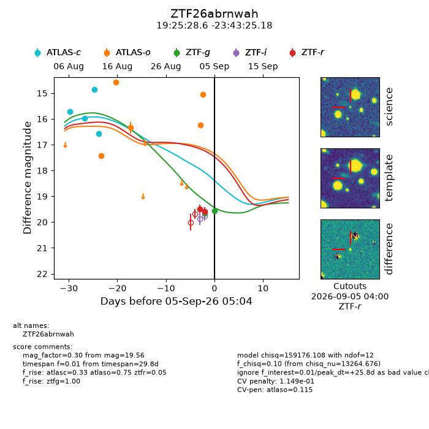
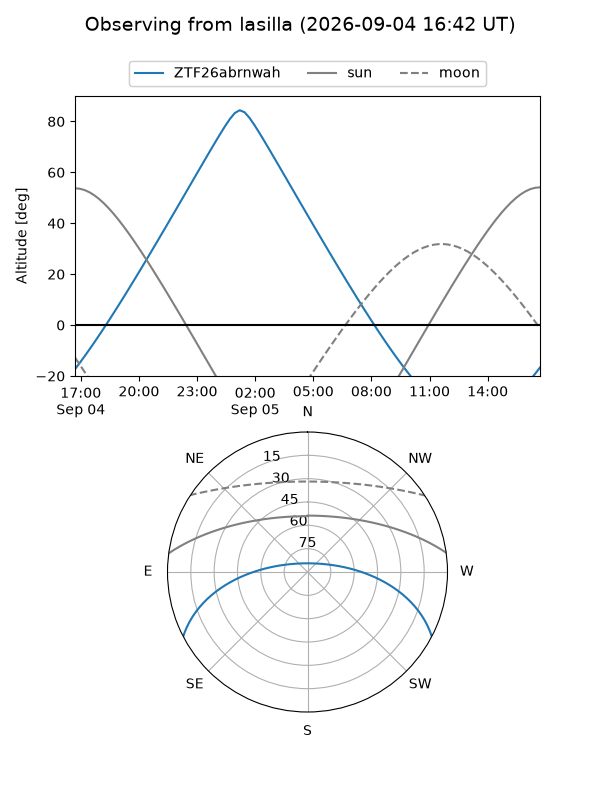
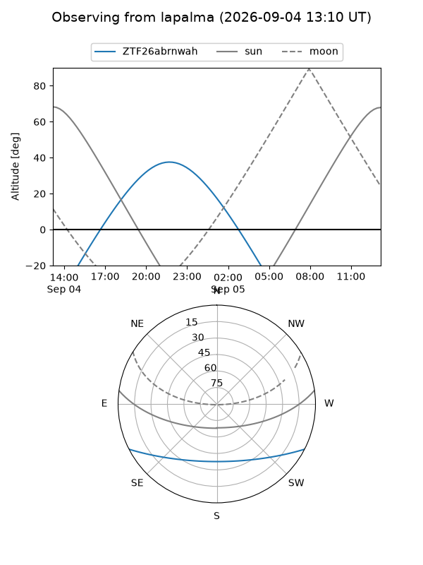
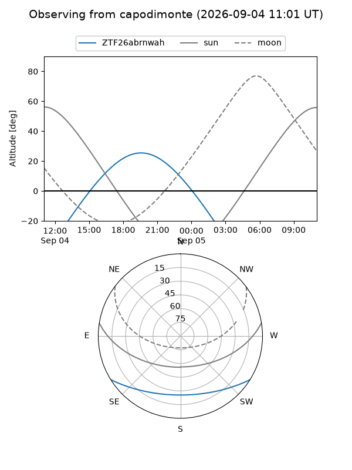
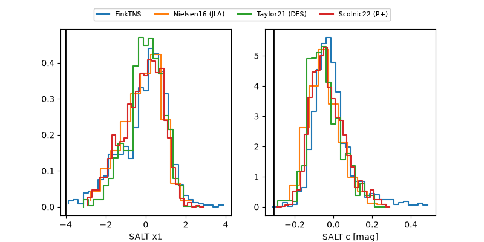

ZTF26abrnwah
Target ZTF26abrnwah at 2026-09-05 05:05
Aliases and brokers:
FINK-ZTF: ztf.fink-portal.org/ZTF26abrnwah
Lasair-ZTF: lasair-ztf.lsst.ac.uk/objects/ZTF26abrnwah
ALeRCE-ZTF: alerce.online/object/ZTF26abrnwah
Direct TNS query: direct search
alt names
ZTF26abrnwah (ztf,fink_ztf)
Coordinates:
equatorial (ra, dec) = 291.3694,-23.72366
equatorial (HMS+DMS) = 19:25:28.65,-23:43:25.18
galactic (l, b) = (14.8116,-17.69955)
Flags:
peak dt: +25.8
likely cv: !!
Photometry:
last atlasc=16.56, atlaso=15.06, ztfg=19.56, ztfr=19.58
4 atlasc, 5 atlaso, 2 ztfg, 2 ztfr detections
Lightcurve

Visibility



Additional plots
